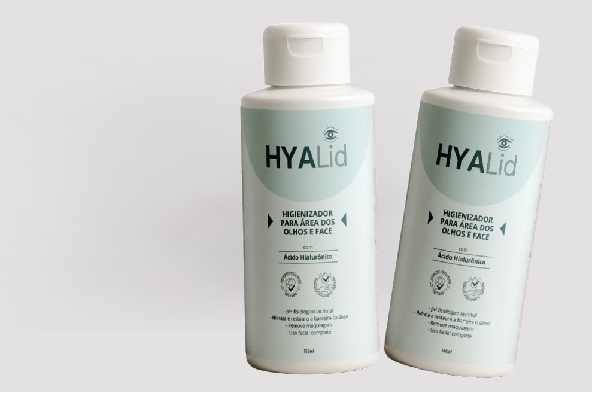
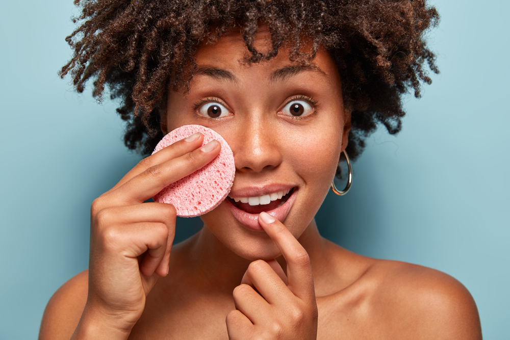
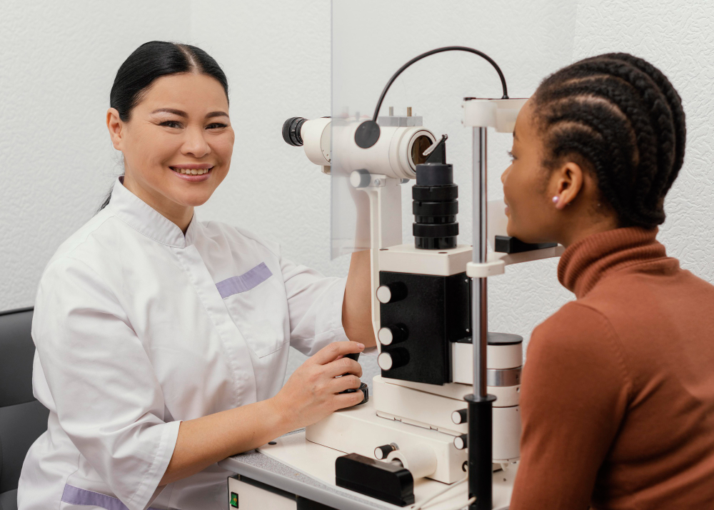

O HYALID não é apenas um higienizador. Ele atua como um coadjuvante terapêutico no cuidado diário e no manejo de condições dermatológicas e oftalmológicas, reforçando a barreira cutânea e proporcionando máxima segurança e tolerabilidade. Indicado para peles sensíveis, sensibilizadas e para quem busca um cuidado completo com a saúde da pele e dos olhos.
Dermatologicamente e oftalmologicamente testado. Produto nacional com alta tecnologia.
✔️ Base de limpeza ultrassuave de origem vegetal
✔️ Complexo hidratante e regenerador com ácido hialurônico
✔️ Ação calmante, anti-inflamatória e reparadora
✔️ Ativos antimicrobianos naturais
✔️ Reforço da barreira cutânea
✔️ pH neutro compatível com a área dos olhos
✔️ Hipoalergênico e sem fragrância
Essa sinergia promove limpeza eficaz sem comprometer o filme hidrolipídico, respeitando a delicadeza da pele periocular.
Tensoativos de origem vegetal proporcionam limpeza eficaz com máxima tolerabilidade, minimizando irritações e ressecamento.
A combinação de glicerina, ácido hialurônico e D-pantenol promove hidratação profunda, recuperação tecidual e melhora da elasticidade.
O Epinutrix® auxilia na proteção e na restauração da pele, aumentando a resistência a agressões externas.
Camomila, aloe vera e calêndula reduzem a inflamação, acalmam e auxiliam na cicatrização.
Óleo de melaleuca, óleo ozonizado de girassol e extrato de semente de toranja contribuem para a higiene e equilíbrio da microbiota.
✔️ Blefarite
✔️ Olho seco
✔️ Conjuntivites crônicas
✔️ Rosácea
✔️ Dermatites
✔️ Peles sensíveis
✔️ Higienização diária
✔️ Pós-blefaroplastia
✔️ Pós-laser e peelings
✔️ Pós-preenchimento e toxina botulínica
Também é ideal para rotina diária de cuidados.

Sua fórmula suave remove maquiagem com eficácia, inclusive na região dos olhos, sem causar irritação ou ressecamento.
Perfeito para quem busca praticidade e cuidado.
✔️ Oftalmologistas
✔️ Dermatologistas
✔️ Clínicas estéticas
✔️ Biomédicos
✔️ Enfermeiros
✔️ Fisioterapeutas dermatofuncionais
✔️ Segurança para pacientes
✔️ Alta adesão ao tratamento
✔️ Versatilidade clínica
✔️ Uso pré e pós-procedimentos

Sim, é indicado para uso diário.
Sim, auxilia na recuperação e na higiene da pele.
Sim, foi desenvolvido para a área periocular.
Sim, auxilia a remoção da maquiagem e limpeza da pele